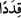

alan “içimizde bizden müslüman olanlar da var sapanlar da var” âyetlerinde yer
almaktadır.
“Biz değişik ve çeşitli yollardaydık” ifâdesinin anlamı; biz Kur’an’ı dinlemeden
önce değişik ve çeşitli yolları tutan, muhtelif mezheplere sâhip kimselerdik demektir.
Veya hâllerin farklılığı açısından yollar gibiydik. Bu son ifâde yukarda, zikredilen
taksimi beyân etmektedir. Yollar anlamına gelen “__WORD__/tarâika” kelimesinin başına bir
muzaf takdir ettik. Çünkü şahıs olarak kişilerin yol olmaları imkânsızdır.
Âlimlerin ifâdesine göre cinlerin Kaderiye, Mürcie, Havâric, Ravâfız, Şia ve Ehl-i
Sünnet’e mensub olanları vardır.
Râğıb’ın Müfredat’ında “tarâik” kelimesi hakkında şu açıklamalara rastlıyoruz: Yol
anlamına gelen “tarik” kelimesinin çoğulu “turuk”tur, “turuk”un çoğulu ise “taraik”tir.
Zâhir olan şudur ki “taraik” kelimesi, “tarikat” kelimesinin çoğuludur. Tıpkı kaside
kelimesinin çoğulunun kasaid geldiği gibi.
“Türlü türlü yollar tutmuştuk” ifâdesi cinlerin dereceler bakımından birbirlerinden
farklı farklı olduğuna işâret etmektedir. Bu tıpkı; “onlar Allah katında derece
derecedirler.” (Al-i, İmran, 3/163) âyet-i kerîmesinde anlatıldığı gibidir.
Yol anlamına gelen “tarik” kelimesi hakkında bilgi vermemiz gerekirse; tarik insanın
ayaklarını bastığı şey demektir. İşte bu anlam istiâre yoluyla insanın hayatta tutmuş
olduğu -ister iyi ister kötü- her türlü yola isim olarak verilmiştir.
Yan yana duran hurma ağaçlarının oluşturduğu sıraya, uzayıp gitmesi açısından yola
benzediği için “tarikatun mine’n-nahli” denilmiştir.
Âyette yer alan “__WORD__/kıdeden” kelimesinin tekili olan “__WORD__/el-Kaddu”, herhangi bir şeyi
uzunlamasına kesmek ve dilmek demektir. Bu sebeple insanın boyuna “kadd”
denilmiştir. Âyette yollar anlamına gelen “taraik” kelimesinin “kıded” kelimesi ile
vasıflandırılması, o yolların parça parça ve birbirinden dağınık olduğuna delâlet etmesi
içindir.
Kamus’un ifâdesine göre el-Kaddu kökünden türeyen “el-Kıddetü”, her birinin
eğilimi birbirinden ayrı olan insan topluluğu demektir. Buna göre âyet-i kerîmede yer
alan “__WORD__ demek: “Bizim içimizde eğilim ve istekleri birbirinden apayrı çeşitli
fırkalar vardır” demektir.
Kâşânî ise bu âyet-i kerîmeyi şöyle anlıyor: “Gerçekten biz kimimiz sâlih kişiler”:
Gerçekten bizim içimizde hayatın nizâmını, bedenin salâhını planlayan güçler gibi sâlih
olanlar var. “Kimimiz ise bunlardan aşağıda” Kimimiz ise vehim, gazab, şehvet, nefsin
arzularına uygun olarak hareketler ile ifsad edicidir. Ayrıca tabiî ve nebâtî güçler gibi
orta hâlli olanlar var. Bizler çeşitli yollara ayrılmışız, her bir yol ve yönelişin, Cenâb-ı
Hak tarafından belirlenen ve kendisine havâle edilen faaliyeti var.
Bâzı tefsir âlimlerine göre “es-Sâlihûn” kelimesi ile kasdedilen; hayırda öne
geçenlerdir. “Bunlardan aşağıda olanlar” ise; mekân itibariyle onlardan daha aşağı
derecede olanlardır. “el-Muktesıdûn” ise iyi amel ile kötü ameli birbirine